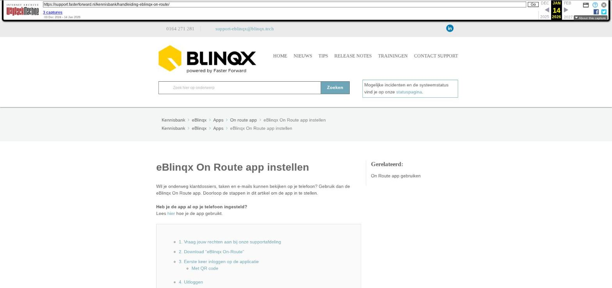

eBlinqx On Route app instellen

Tekstinhoud
eBlinqx On Route app instellen
Wil je onderweg klantdossiers, taken en e-mails kunnen bekijken op je telefoon? Gebruik dan de eBlinqx On Route app. Doorloop de stappen in dit artikel om de app in te stellen.
Heb je de app al op je telefoon ingesteld?
Lees hier hoe je de app gebruikt.
1. Vraag jouw rechten aan bij onze supportafdeling
2. Download "eBlinqx On-Route"
3. Eerste keer inloggen op de applicatie
Met QR code
4. Uitloggen
Let op! Rechten
1. Vraag jouw rechten aan bij onze supportafdeling
Om in te loggen op de applicatie, heb je een QR code nodig. Deze vraagt de verantwoordelijke van jouw organisatie aan door een e-mail te sturen naar support-eblinqx@blinqx.tech. Vermeld hierin dat je gebruik wilt maken van eBlinqx On Route, wie er gebruik gaan maken van de applicatie en de naam van jouw organisatie.
Zodra de rechten voor jouw organisatie per account geactiveerd zijn, ontvangen desbetreffende personen binnen de organisatie een persoonlijke QR code onder "Mijn instellingen".
2. Download "eBlinqx On-Route"
De app is gratis te downloaden voor iPhones en iPod Touch met iOs 10.3 of hoger en Android versie 6.0 en hoger. Klik hier voor de downloadpagina Android. Klik hier voor de downloadpagina iOs.
Je kunt in de App Store ook zoeken op "eBlinqx".
3. Eerste keer inloggen op de applicatie
Met QR code
Ga in jouw browser (op jouw computer, niet op jouw mobiele telefoon) naar jouw e-Blinqxomgeving;
Ga naar "Mijn instellingen" (onder het poppetje rechts bovenin);
Onder "Algemeen" vind je naast "app instellen" een QR code;
Pak jouw telefoon of tablet en open eBlinqx On Route;
Klik op "Login met QR code";
Scan met jouw telefoon of tablet de QR code op jouw computerscherm;
Log in met jouw gebruikelijke gebruikersnaam en wachtwoord;
Indien gebruik wordt gemaakt van de Two Factor Authentification dien je deze 6 cijferige code in te vullen
Druk op "Accepteren" om de app toestemming te geven tot jouw eBlinqxomgeving;
Maak nu eenmalig een persoonlijke code aan van 4 cijfers. Deze gebruik je bij een volgend gebruik om direct in te loggen.
De app is nu klaar voor gebruik.
4. Uitloggen
Klik op het hamburgermenu (3 streepjes) linksbovenin
Klik op 'Instellingen'
Klik op 'Log uit' om uit te loggen.
Let op! Rechten
In de app bestaan niet dezelfde rechten als in de Eblinqxomgeving op jouw computer. Wanneer een persoon recht heeft op een dossier, kan hij/zij het volledige dossier inzien. Het kan dus voorkomen dat iemand op de app bepaalde documenten wel kan inzien, terwijl dit op de reguliere omgeving niet mogelijk is.
Laatste update: 15 oktober 2025
Was deze informatie nuttig?
Ja Nee